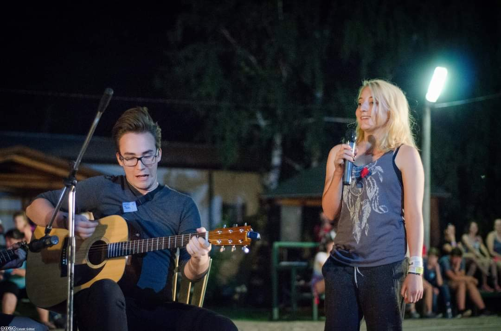
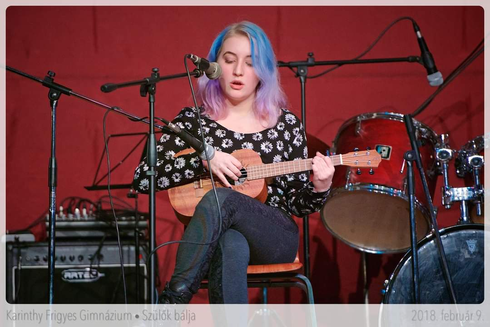
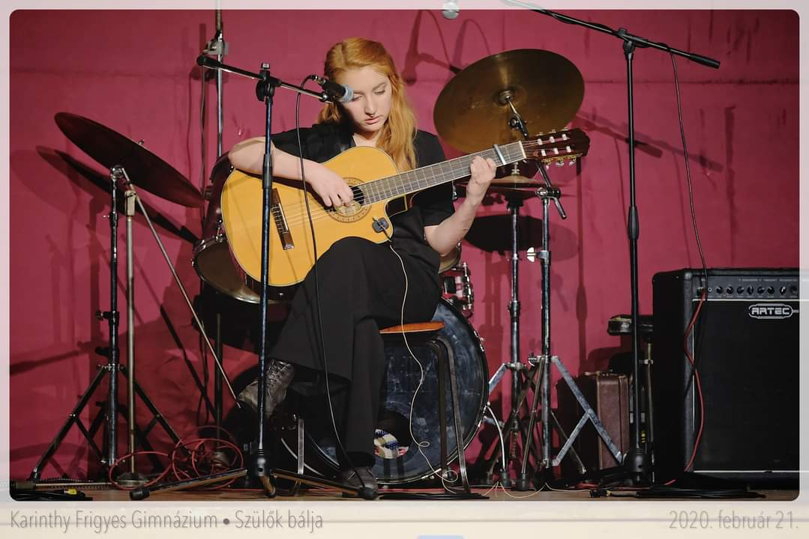

Amióta az eszemet tudok, zenélek. Amikor oviban mindenki hercegnő akart lenni, én meg akartam nyerni a Megasztárt... nyiván mondanom sem kell, hoogy erről azóta letettem.
Ennek ellenére öt évvel ezelőtt elkezdtem magánéneket tanulni (komolyzenei típusú találkozások), az évek során több koncerten és versenyen vettem részt. Csak egy pár ezekből:
Kovid előtt minden januában felléptünk az Óbudai Társaskörben. Ez a csoportkép a 2019-es után készült.
Egy kamarazenei verseny megnyerése után volt szerencsénk a Magyar Rádió Márványtermében is. Valahogy ez az akkor készült legelőnyösebb kép.
Ez még a 2017-es gimis gólyatáborunkban készült. Itt természetesen könnyűzene volt a terítéken
 Gimnáziumomban bevett szokás volt, hogy a februárban tartott Szülők Bálján mi diákok adtunk műsort. Az első kép 2018-as, itt még ukulelén játszottam, nem is saját számot. Ezután vált szokásommá általam írt dalt előadni ezeken az eseményeken. A második képen is ez látható, 2020-ban még a vírus előtt volt ez a fellépés.